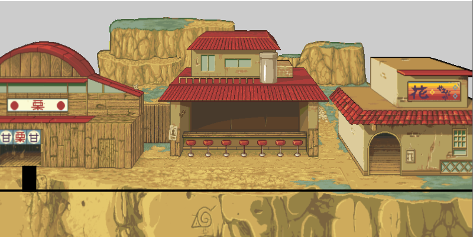
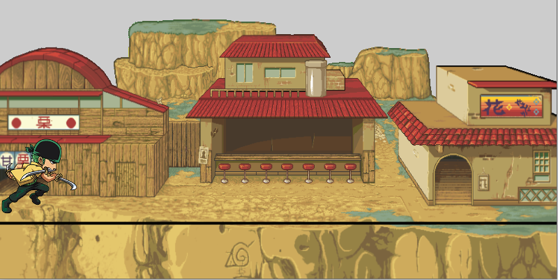

Mudhir SharifI am studying a Computer Science BSc degree at City, University of London. I decided to study Computer Science because I have many family members who work in technology and it has always interested me. During A Levels is when my programming journey began as we did projects using Python along with Tkinter and SQL. During my spare time, I enjoy playing sports. My favourite sports are football and basketball. I also really enjoy travelling as I like visitting different countries and experiencing different cultures. |
||
|
|
||
Bootcamp 2020: Anime OpeningMy first programming project, concluding the 2 week Programming Bootcamp at City (2020). This processing project demonstrates an understanding of the use of sound, methods, interactions, images, if statements and classes. I created a village background by resizing an image to match the size of the sketch. A line is also created on this background where the user will be able to make their player jump(triggering a ninja jump sound effect). There is also an anime soundtrack playing in the background for added effect to create the feel of a real anime scene. I added 4 different characters that users can choose from using key interactions and if statements. Different keys would create a different character to appear on the screen and users can use those keys to make their characters jump and trigger the sound effect. I included all character information inside the Player class to make the code more organised. Check out the code on Github: https://github.com/mudhirsharif/adbs958.git | ||
|   | ||